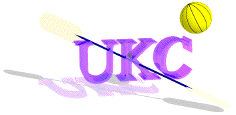

|  |
Return to
UKC Index Polo Page |
* important rules, these are the rules that must be known to all
players in order to play.
** essential rules, these are the rules that must be known to all
players for safety reasons (please read these!!!!!).
RULES OF PLAY
* 1. The winner:
1.1. the winner is the team that scores the most goals.
* 2. Playing time:
2.1. Playing time will normally be 30 min. each way, unless
extra periods are needed (wanted).
2.2. The teams will change sides after have period of play.
2.3. After each and every time-out, the game is "ON" only
after the referee or acting referee blows the whistle.
2.4. Time-out may be called by the Referee during the playing time.
3. CHOICE OF END:
3.1. The Referee or Scrutineer shall proceed the play by tossing a
coin (or similar effect) and offering the choice of the direction
the team will paddle for the first half, to the captain of the
team winning the toss.
4. COMMENCEMENT OF PLAY:
4.1. At the beginning of each period of play, all players will line
up with the back of their kayaks on their Goal-Line.
4.2. The Referee will blow the whistle to start play and then throw
the ball into the center of the Playing Area.
4.3. Only one player from each team may make an attempt to gain
possession of the ball. Infringement incurs a free-throw
(loss of possesion).
5. SCORING A GOAL:
5.1. A goal is scored when the whole of the ball passes through the
plane of the front of the goal frame.
6. RESTART AFTER GOAL:
6.1. After a goal has been scored the team who has conceded the
goal will take the restart throw from the center of the
Playing Area.
6.2. All players of both teams must start in their own half.
6.3. The Referee will blow the whistle to restart play.
7. COMPLETION OF PLAY:
7.1. The Timekeeper (whoever has a watch) will indicate the end of
the period of playing time by the use of loud signal.
The ball is dead at the start of the signal.
7.2. If a Goal-Penalty-Shot has been awarded prior to the signal for
completion of play, the Goal-Penalty-Shot must be taken before
play is to be considered completed.
8. TIE BREAKING (will probably never be needed):
8.1. In the event of a draw at the completion of the normal playing
time, where a decision is essential, Extra-Time may be played,
and/or a Penalty-Shoot-Out used as required by Competition Rules.
9. EXTRA TIME:
9.1. Extra time is the period, played to the first goal, with a
maximum time limit of two periods of (3) minutes each.
10. PENALTY-SHOOT-OUT:
10.1. The five players from each team taking part in the game
at the end of play will take part in the six meter
Penalty-Shoot-Out.
10.2. All five players from each team on the field at the end of
play will take alternative Goal-Penalty-Shots at goal.
10.3. If, after each team has had five shots, one team has scored a
greater number of goals, then that team will be the winning
team.
10.4. If, after each team has had five shots, the score is still
equal then the teams will take alternate shots until, with an
equal number of shots, one team has scored more goals.
* 11. CAPSIZED PLAYER:
** 11.1. If a player has made it clear to the referee and other players
she/he does not have a working eskimo-roll the game will stop
whenever the players capsizes.
11.2. If player who has failed to do so or has a confident roll capsizes
the game does not stop. If this player swims the game stops and the
player is ridiculed.
* 12. DEFENSE OF GOAL:
12.1. The one defending player most directly under the goal, who is
holding a paddle up to defend the goal, is considered to be the
goal-keeper at that time.
12.2. If the goal-keeper is not in possession of the ball and is
moved or unbalanced by an opposing player, then that player has
committed an illegal tackle. Infringement incurs a sanction.
13. ENTRY TO THE PLAYING AREA, RE-ENTRY AND SUBSTITUTION:
13.1. No more than 5 players from the one team may be on the Playing
Area at one time. Infringement incurs a sanction and immediate
removal of the offending player(s) until the next break in play.
13.2. Entry of players is only allowed from the team's Goal-Line.
Exit of players for substitution must be at the team's Goal-Line.
13.3. Substitution is allowed at any time.
14. BALL OUT OF PLAY:
14.1. When any part of the ball touches the line or the vertical
plane of the Side-Line or Goal-Line, or touches any Overhead
Obstacle, the team that was not the last to touch it with
their paddle, boat or person is awarded a throw as follows:
14.1.1. Goal-Line: Goal-Line Throw if an attacking player was
last to touch the ball. Taken from anywhere along the
goal line.
14.1.3. Corner-Throw if a defending player was last to touch
the ball. The player taking the throw must position his
body in the corner of the Playing Area.
14.2. 5-seconds and 1-meter restart conditions apply to all Ball-Out
of Play Restarts. Infringement incurs a sanction.
15. REFEREE'S BALL:
15.1. If the Referee needs to stop the game when no offense has
occurred (e.g. injury or stalemate situation) the Referee will
restart the game with a Referee's Ball.
15.2. Two opposing players will line up at right angles to the
sideline, near to the sideline where the situation occurred,
one meter apart. They will place their paddles on the water,
but not between the kayaks.
15.3. The Referee will throw the ball on the water between them and
the players will then make an attempt for the ball with their
hands.
* 16. ILLEGAL PLAY:
The following constitutes illegal Play, and when committed during play
or a break in play, incurs a sanction:
16.1. Illegal-Use-of-Paddle:
16.1.1. Striking an opponents person or kayak with a paddle,
or using the paddle against the opponent or their
kayak for propulsion or support, or to impede the
opponent.
** 16.1.2. Playing, or attempting to play, the ball with a paddle
when the ball is within arms reach of an opponent, and
that opponent is attempting to play the ball with their
hand.
16.1.3. Placing a paddle within arms reach of an opponent who
has the ball in their hand.
16.1.4. Striking the ball with a paddle.
16.1.5. Throwing a paddle.
16.1.6. Any other use of a paddle that endangers a player.
16.2. Illegal-Kayak-Tackle:
A Kayak-Tackle is a player, with his kayak, pushing an
opponents kayak, The following constitute an Illegal-Kayak-
Tackle.
** 16.2.1. Any Tackle that results in the tacklers kayak
contacting the body of the tackled player and/or
endangering the tackled player.
16.2.2. Any hard tackle to the side of the kayak if it is at
90 degrees and not by sustained contact.
16.2.3. Tackling an opponent who is not within 3 meters of the
ball.
16.2.4. Tackling an opponent when the tackler is not competing
for the ball.
16.3. Illegal-Hand-Tackle:
A Hand-Tackle is a player, with one open hand, pushing on
opponent's side or upper arm. The following constitute an
Illegal-Hand-Tackle.
16.3.1. Any Tackle where the tackled player does not have sole
possession of the ball.
** 16.3.2. Any Tackle which endangers the tackled player.
** 16.3.3. Any body contact other than open-hand to side or upper
arm.
*** 16.3.4. Any tackle on an player that has made it clear that
she/he does not have an eskimo-roll.
* 16.5. Illegal Holding:
16.5.1. A player directly or indirectly restricting the
movement of an opposing player, by placing his hand,
arm or paddle over the kayak, or holding the opposing
player or equipment.
16.5.2. A player using for propulsion or support, or moving
out of place any Playing Area equipment e.g. boundary
markers, goal supports, or any surrounding object.
* 16.6. Illegal Possession:
16.6.1. A player must dispose of the ball within five (5)
seconds of being in possession of it, either by
passing it to another player or by throwing it one
meter horizontally.
16.6.2. If a player momentarily loses sole possession of the
ball.
16.6.3. A player may not paddle with ball resting on the deck
or spray deck.
** 16.7. Unsportsmanlike Behavior:
16.7.1. Any infringement committed by a player during a break
in play.
16.7.2. Hindering another player's attempt at righting himself
after capsizing.
16.7.3. Interference with the equipment of an opponent.
16.7.4. Use of deliberate delaying tactics.
16.7.5. Players showing dissent.
16.7.6. Retaliation.
16.7.7. Foul or abusive language.
16.7.8. Other unsportsmanlike Behavior, or Behavior considered
detrimental to the game, at the discretion of the
Referee.
17. ADVANTAGE:
17.1. The Referee can play advantage, at their discretion, if
neither Referee has blown the whistle.
18. SANCTIONS:
The Referee can impose any combination of the following sanctions for
Illegal Play depending on the severity and/or frequency of offenses
being penalized.
18.1. Warning: A warning may be given in addition to another
sanction.
18.2. Goal-Penalty-Shot:
18.2.1. Goal-Penalty Shot
18.2.2. A Goal-Penalty-Shot will be awarded for an offense in
the 6m area where a player is fouled in the act of
shooting.
18.3. Free-Shot:
18.3.1. A Free-Shot may be direct shot at goal.
18.3.2. A Free-Shot will be awarded for an offense where a
player is fouled in the act of shooting, or for any
dangerous play, except where a Goal-Penalty-Shot must
be awarded.
18.4. Free-Throw:
18.4.1. A Free-Throw may not be direct at goal. General play
resumes once the throw is taken.
18.4.2. A Free-Throw will be awarded for offenses where a Goal-
Penalty-Shot or Free-Shot has not been awarded.
19. TAKING THROWS:
19.1.1. The player taking any goal-line throw, corner-throw,
side-line throw, free-throw or free-shot must hold the
ball above his head, at arms length, before taking the
throw.
19.1.2. Goal-line throw, corner throw, sideline throw and free
throw are indirect throws.
19.2. The ball is not in play until it has traveled at least one
meter horizontally.
19.3. The player must throw the ball within five seconds of being in
possession of the ball and in position to take the throw.
19.4. For a Free-Throw or a Free-Shot the restart will be taken, at
the position indicated by the Referee.
20. TAKING A GOAL-PENALTY:
20.1. The player taking the Goal-Penalty-Shot will be stationary with
his body on the six meter line.
20.2. All other players will be in the other half the Playing Area.
20.3. The shot will be taken when referee blows the whistle. The five
second rule applies.
20.4. Play will restart on the whistle.
20.5. The player taking the shot may not play the ball again until it
has touched another player or his equipment or the goal frame.